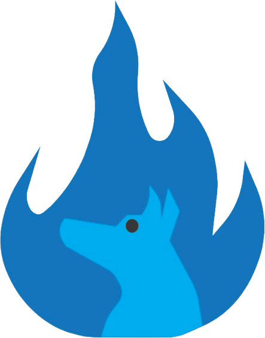
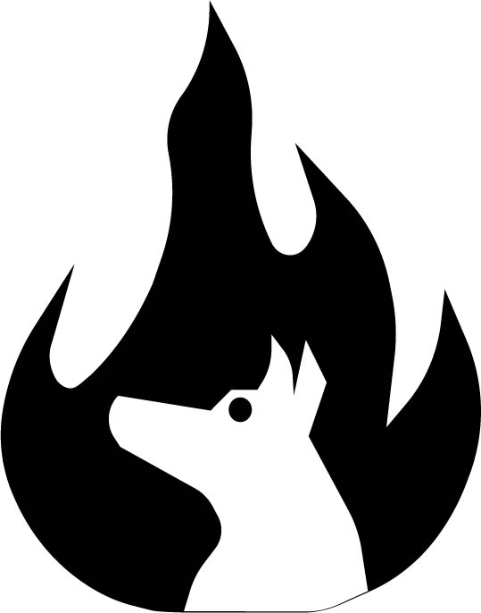
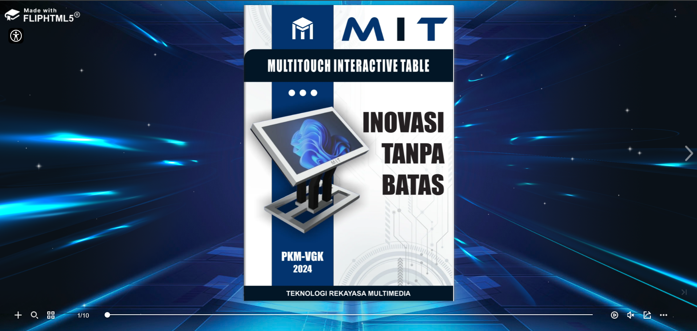

Semester 1
Proyek ini berfokus pada pemuatan identitas visual personal (Personal Branding) melalui filosofi penggabungan dua elemen simbolis utama: Karakter Anjing (merepresentasikan kesetiaan, ketangguhan, dan kerja keras sesuai Shio kelahiran) serta Elemen Api (merepresentasikan semangat, passion, dan kreativitas yang dinamis).
Pendekatan Psikologi Warna & Vektor:
Pemilihan warna biru digunakan untuk memberikan kesan profesional, ketenangan, rasa percaya (*trustworthiness*), dan tanggung jawab. Seluruh proses perancangan visual dari pembuatan sketsa dasar hingga eksekusi bentuk linier presisi dikerjakan menggunakan software berbasis vektor industri, Adobe Illustrator.


Proyek Rencana Bisnis & Produk Cybernetics: Multitouch Interactive Table (MIT)
MIT merupakan konsep perancangan perangkat keras interaktif yang mengintegrasikan fungsionalitas furnitur (meja) dengan layar sentuh multi-titik (*multitouch system*) berkinerja tinggi yang terhubung pada sistem operasi komputasi terpadu.
Peran & Tanggung Jawab Utama:
- Perancangan & Spesifikasi Produk: Menyusun analisis fungsionalitas perangkat, keunggulan ergonometris, serta identifikasi keterbatasan teknis produk.
- Studi Kelayakan & Persiapan Produksi: Mengorganisir tahap perencanaan alur produksi, manajemen material, dan pemetaan segmen pasar sasaran.
- Dokumentasi Visual & Katalog: Menyusun portofolio presentasi produk berupa buku digital interaktif untuk kebutuhan pemasaran.